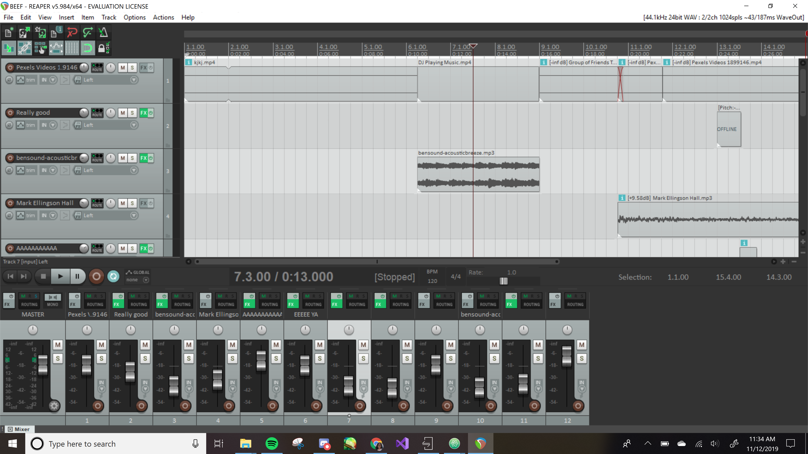

Uh oh
People are partying, but something is happening outside.

Sources
- View of city at dusk
-
By: Luis Enrique Carvajal
- Group of friends toasting with beer
-
By: Bruno Moretti
- Man drinking with sunset background
-
By: Bruno Moretti
- DJ playing music
-
By: Free videos
- ACOUSTIC BREEZE
-
By: Benjamin Tissot
- clink
-
- swallow
-
- squash
-
- white noise
-
- scream
-